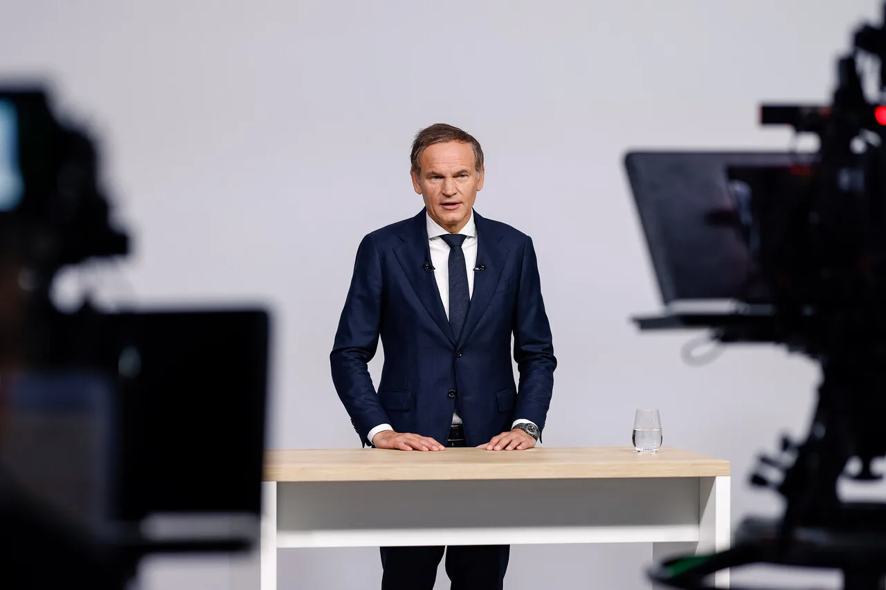
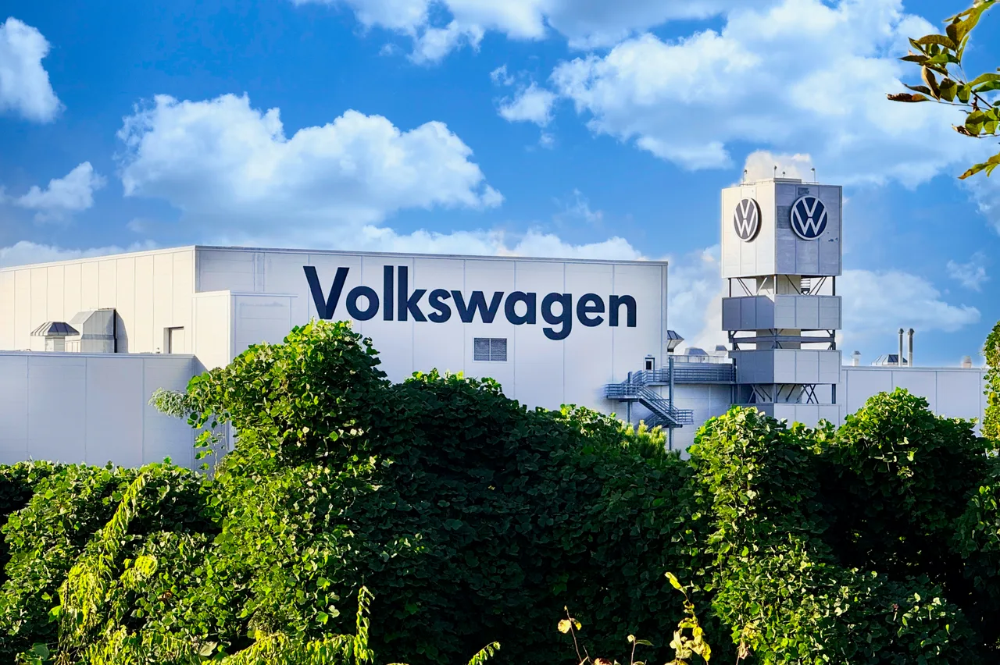
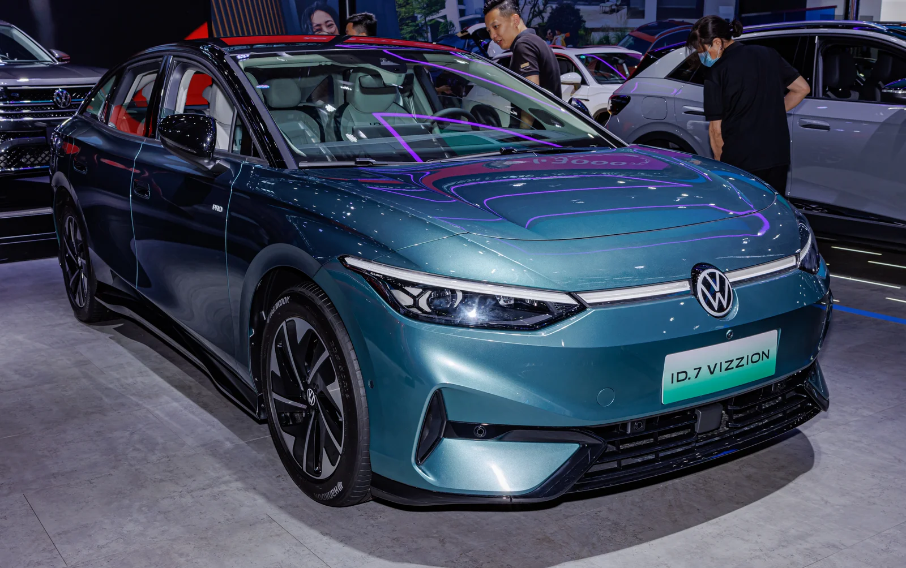

▲ 올리버 블루메 폭스바겐그룹 CEO. 5만 명은 "확정 목표가 아니라 비용 격차를 산출한 기준"이라고 설명했다
폭스바겐그룹이 다시 감원 카드를 꺼냈습니다. 이번에는 전 세계에서 최대 5만 명을 추가로 줄이는 방안입니다.
기존 계획 위에 얹히는 숫자라는 점이 중요합니다. 폭스바겐은 이미 독일에서 약 3만5,000명, 그룹 전체로는 약 5만 명 규모의 인력 감축을 추진해 왔습니다. 추가분이 현실화하면 전체 구조조정 규모는 최대 10만 명에 이를 수 있습니다.
1. 5만이라는 숫자의 성격
블루메 CEO는 직원들에게 이 숫자의 성격을 따로 설명했습니다. 5만 명은 확정된 감원 목표가 아니라, 경쟁업체와의 비용 격차를 줄이기 위해 산출한 기준이라는 것입니다.
이 설명은 완화이면서 동시에 경고입니다. 목표가 아니라는 점에서는 완화이지만, "그만큼 줄여야 경쟁사와 비슷해진다"는 계산 결과라는 점에서는 문제의 크기를 그대로 드러냅니다.
블루메 CEO의 진단은 더 직설적입니다. 그는 현재 상황을 "위중하다는 말로도 부족하다(more than critical)"고 표현했습니다. 5만 명이라는 숫자 자체는 폭스바겐이 공식적으로 확정한 적이 없고, 로이터가 소식통을 인용해 전한 규모입니다.

▲ 폭스바겐의 주력 모델. 판매량이 아니라 비용 구조가 문제로 지목됐다 ⓒ 폭스바겐그룹
구체적인 진단도 함께 나왔습니다. 블루메 CEO는 폭스바겐의 간접비용이 경쟁업체보다 30% 이상 높다고 밝혔습니다. 현재의 비용 구조로는 장기적인 경쟁력 확보가 어렵다는 입장입니다.
2. 세 방향에서 동시에 눌리고 있다
수익성 악화의 원인은 하나가 아닙니다. 서로 다른 세 가지 압력이 같은 시기에 겹쳤습니다.

▲ 전기차 전환 국면에서 중국 업체와의 가격 경쟁이 수익성을 압박하고 있다 ⓒ 폭스바겐그룹
첫째는 중국입니다. 중국 시장에서 현지 전기차 업체와의 가격 경쟁이 거세졌습니다. 폭스바겐은 오랫동안 중국을 최대 시장으로 삼아 왔기 때문에, 이 시장에서의 점유율 하락은 그룹 전체 실적에 직접 반영됩니다.
둘째는 미국의 관세입니다. 자동차 관세 부담이 수출 채산성을 떨어뜨립니다.

▲ 생산 거점의 가동률과 비용 구조가 재점검 대상에 올랐다 ⓒ 폭스바겐그룹
셋째는 유럽의 생산비용입니다. 독일을 포함한 유럽의 인건비와 에너지 비용이 높은 상태로 유지되면서, 같은 차를 만들어도 원가가 경쟁국보다 높게 형성됩니다.
| 요인 | 내용 |
|---|---|
| 중국 | 현지 전기차 업체와의 가격 경쟁 심화 |
| 미국 | 자동차 관세 부담 |
| 유럽 | 높은 생산비용 |
| 내부 | 간접비용이 경쟁사 대비 30% 이상 높음 |
3. 공장 폐쇄는 아직 결정되지 않았다
인력만의 문제가 아닙니다. 폭스바겐은 독일 일부 공장의 가동률과 비용 구조를 다시 점검하고 있습니다. 경쟁력을 확보하지 못하는 사업장에 대해서는 추가 조정이 불가피하다는 것이 회사의 판단입니다.
블루메 CEO는 공장 폐쇄가 결정된 것은 아니라고 선을 그으면서도, 폐쇄 가능성을 완전히 배제하지는 않았습니다. 회사는 향후 수개월 안에 해당 사업장의 운영 방안을 마련할 계획입니다.

▲ 독일 생산 물량의 향방이 브랜드 전체 라인업에 영향을 준다 ⓒ 폭스바겐그룹
업계는 이번 사안을 폭스바겐 창사 이래 최대 규모의 구조조정으로 보고 있습니다. 유럽으로 밀려드는 중국 업체의 공격적 경쟁, 중국 시장에서의 수익 하락, 미국의 수입 관세가 동시에 겹친 결과입니다.
독일 자동차 산업에서 공장 폐쇄는 상징성이 큽니다. 폭스바겐은 창사 이래 독일 내 공장을 닫은 전례가 사실상 없는 회사로 인식돼 왔고, 그 전제가 흔들린다는 것 자체가 업계에 주는 신호가 다릅니다.
4. 노조와 주주가 변수다
이 계획이 그대로 실행될 것이라 보기는 어렵습니다. 반대 축이 뚜렷하기 때문입니다.
폭스바겐 사업장평의회는 기존 합의를 넘어서는 추가 감원과 공장 폐쇄에 반대하고 있습니다. 독일의 노사 구조에서 사업장평의회는 상징적 기구가 아니라 실질적인 협의 주체입니다.

▲ 중국 시장 대응 모델. 시장별 전략과 생산 배치가 함께 조정 대상이다 ⓒ 폭스바겐그룹
주주 구성도 변수입니다. 폭스바겐 지분을 보유한 니더작센주 정부도 대규모 일자리 감축에 부정적인 입장입니다. 주 정부가 주주로 들어가 있는 구조 때문에, 순수한 경영 판단만으로 결정이 내려지지 않습니다.
다음 분기점은 9월 4일입니다. 폭스바겐 감독이사회가 이날 구조조정 방안을 다시 논의합니다. 추가 감원 규모와 독일 공장 운영 방안이 주요 쟁점이 될 것으로 보입니다.
5. 국내에 주는 함의
이 사안은 독일 내부 문제로만 보기 어렵습니다. 폭스바겐그룹은 폭스바겐, 아우디, 포르쉐, 스코다, 세아트 등을 거느린 다브랜드 그룹입니다. 그룹 차원의 비용 구조 조정은 각 브랜드의 모델 라인업과 출시 일정에 순차적으로 반영됩니다.
국내 수입차 시장에도 영향이 옵니다. 특정 모델의 도입 시점이 미뤄지거나, 트림 구성이 축소되는 방식으로 나타날 수 있습니다. 실제 구매를 고려 중이라면 관심 모델의 국내 도입 계획이 유지되는지 확인해 둘 필요가 있습니다.
더 넓게 보면 이것은 유럽 완성차 전체의 문제입니다. 중국의 가격 경쟁력, 미국의 관세, 유럽의 고비용이라는 세 조건은 폭스바겐만 겪는 것이 아닙니다. 한국 완성차 업계가 같은 삼각 압력 안에서 어느 위치에 있는지도 함께 봐야 합니다.
정리하면 이렇습니다. 5만이라는 숫자보다 무거운 것은 그 숫자가 나온 계산식입니다. 간접비용이 경쟁사보다 30% 높다는 진단이 유지되는 한, 이번에 감원을 피하더라도 같은 요구는 다시 돌아옵니다.